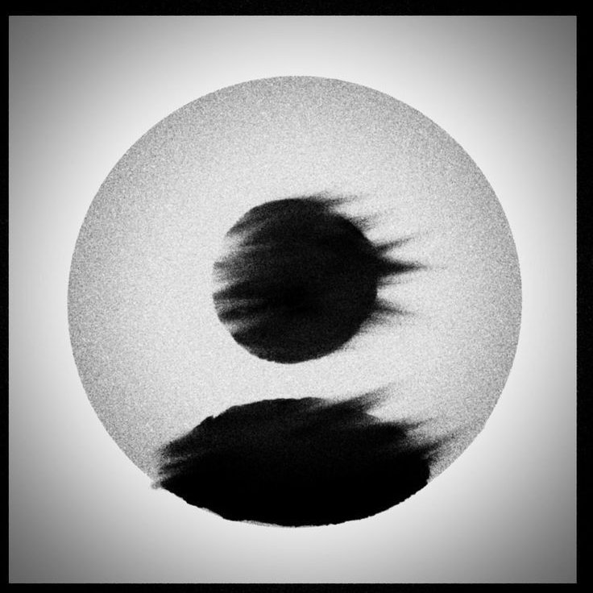

Sa'dullayev Jo'shqinbek
Mening rasmiy sahifalarim bilan bog'laning!
Instagram: @sadullayev_735
Telegram: @sadullayev_735
Email: joshqinbeksadullayev188@gmail.com
© 2025 Jo'shqinbek • Yomgʻirli Portfolio